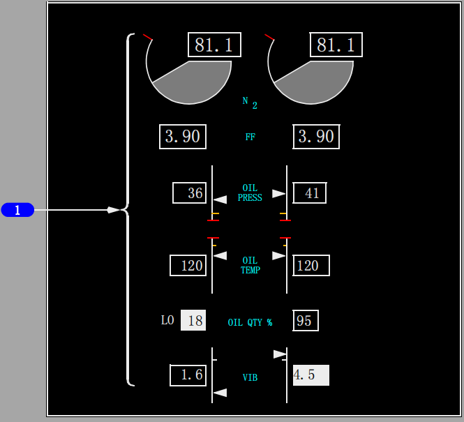
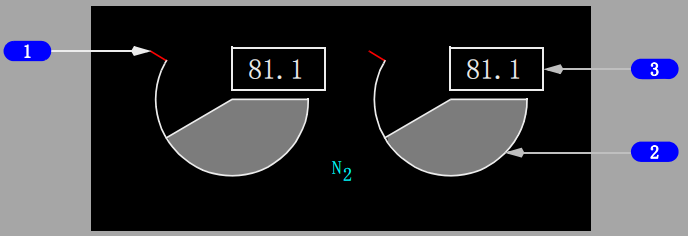
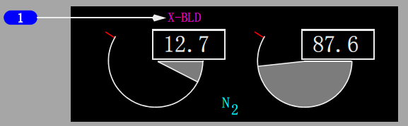
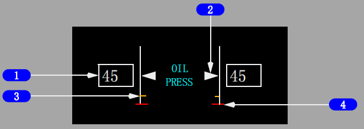
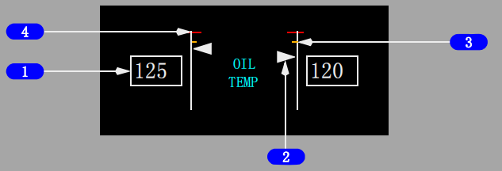
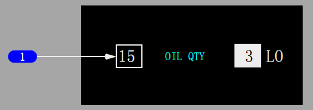
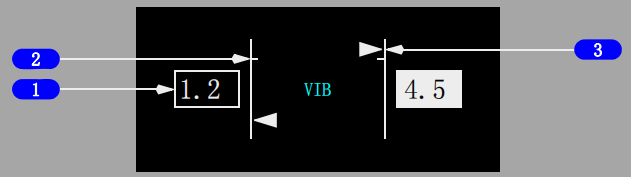
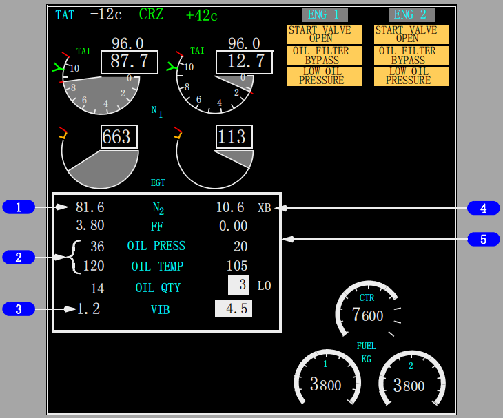

控制与指示:
返回面板 
1 次要发动机指示
次要发动机指示在以下情况显示：
• 当通用显示系统(CDS)刚接通电源时
• 当由多功能显示器(MFD)选择时
• 在空中，当一台发动机起动手柄移至切断(CUTOFF)位时
• 在空中，当一台发动机失效时
• 当次要发动机参数超出正常操作范围时。

1 N2红线
显示(红色)-
N2% RPM操作限制。
2 N2 RPM指示
显示 N2% RPM
• 显示(白色)-
正常操作范围
• 显示(红色)-
超出操作限制。
3 N2读数(数字式)
显示(白色)-
正常操作范围。
显示(红色)-
• 超出操作限制
• 在地面，当发动机关车后，红色方框表示在空中曾发生超限情况。

1 交输引气起动(X-BLD)指示
显示(洋红色) -
空中起动推荐使用交输引气。
当空速小于风转起动的要求时显示。

1 燃油流量(FUEL FLOW)电门(由弹簧力保持在RATE位)
速率(RATE)-
显示到发动机的燃油流量。
油耗(USED) –
• 显示上一次重置后消耗的燃油
• 10秒后，显示自动转到燃油流量。
重置(RESET) –
• 将燃油消耗重置到零
• 显示已消耗燃油1秒钟，减小至零，然后显示燃油流量。
2 燃油流量(FF)读数(数字式)
显示(白色) -
当燃油流量(FUEL FLOW)电门在速率（RATE）位时，显示到发动机的燃油流量(千克/小时 x 1000)。
3 燃油消耗读数(数字式)
显示(白色) -
当燃油流量(FUEL FLOW)电门移至油耗(USED) 或重置(RESET)位时显示。

1 滑油压力(OIL PRESS)读数
显示发动机滑油压力(psi)：
• 显示(白色)- 正常操作范围
• 显示(琥珀色)- 警戒范围
• 显示(红色)- 达到操作限制。
2 滑油压力(OIL PRESS)指针
显示发动机滑油压力：
• 显示(白色)- 正常操作范围
• 显示(琥珀色)- 达到警戒范围
• 显示(红色)- 达到操作限制。
3 滑油压力低(OIL PRESS)琥珀色带
自红色警戒线起的低滑油压力警戒范围：
• 高于65% N2时，根据N2% RPM而有所变化
• 低于65% N2时，不显示琥珀色带。
4 低滑油压力(OIL PRESS)红线
显示(红色)- 滑油压力操作限制。

1 滑油温度(OIL TEMP)读数
显示滑油温度(℃)：
• 显示(白色)- 正常操作范围
• 显示(琥珀色)- 达到警戒范围
• 显示(红色)- 达到操作限制。
2 滑油温度(OIL TEMP)指针
显示滑油温度(℃)：
• 显示(白色)- 正常操作范围
• 显示(琥珀色)- 达到警戒范围
• 显示(红色)- 达到操作限制。
3 滑油温度高(OIL TEMP)琥珀色带
显示(琥珀色)- 滑油温度警戒范围。
4 滑油温度(OIL TEMP)高红线
显示(红色)- 滑油温度操作限制。

1 滑油量(OIL QTY)读数
以夸脱为单位显示可用滑油量。(选型)
以升为单位显示可用滑油量。(选型)
以百分比为单位显示可用滑油量。(选型)
图像颜色反转，显示LO(白色)时表示滑油量低。
Note: 在发动机起动、起飞和爬升过程中，指示的滑油量可能会明显减少。
如果发生这种情况，发动机操作不受影响，平飞期间应该会指示正确的滑油量。
Note: 风转过程中当N2 RPM低于大约8%，滑油量指示低至零属于正常。

1 振动(VIB)读数
显示(白色)- 发动机振动水平。
振动水平高时图像颜色反转。
2 高限
显示刻度线和粗线。
3 振动(VIB)指针
显示(白色)- 发动机振动水平。
紧凑型发动机显示
紧凑式发动机显示时，次要发动机显示会发生下列变化。

1 N2 RPM指示
N2从圆盘式显示变为数字式显示。
如果在空中发生过超限情况，则在地面发动机关车后，数字显示被红色方框框起。
2 滑油压力(OIL PRESS)、滑油温度(OIL TEMP)指示
仅以数字式读数显示
如果超出限制，数字式读数显示琥珀色或红色。
3 振动(VIB)指示
仅以数字式读数显示。
4 交输引气起动(XB)指示
显示在N2的一侧
5 超限指示
当选择紧凑型显示时，如果发生超限情况，次要发动机参数周围出现矩形方框。
矩形框的轮廓为粗线并且闪烁10秒钟。10秒钟之后，矩形框轮廓变细并且不再闪烁。
外廓的颜色与超限的颜色一致 - 琥珀色、红色或白色。